Running an autonomous robotics lab from my phone
What it actually took to run a 100-hour, self-resetting SO-101 benchmark while at work.
At 12:44 on Tuesday, while I was at work, the robot arm on my desk sent a message to my phone asking if I could tuck in the flap on a box of film.
Three times in a row, its gripper had caught on the popped end flap of a white Ilford carton. At 1:19 I texted back, “Can’t right now.” The arm parked itself with torque off and waited. An hour later I gave Claude Fable 5.2 the go-ahead to remove the carton remotely if it could do so safely. Working from fresh camera frames, it gripped the Ilford 8 mm toward its closed end and set it safely off to the side. Then it updated the reset pipeline for a three-carton scene and went right back to running experiments.
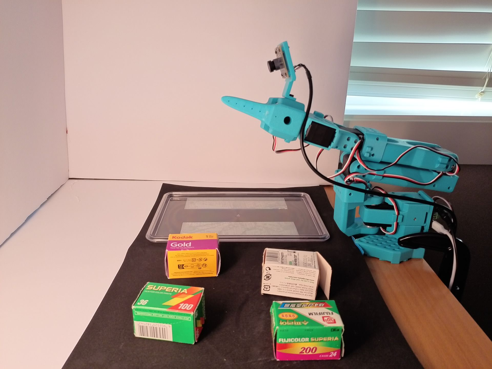
That exchange is the real backstory behind my SO-101 robot-interface study. Because I work full time for the banana company, the only way to collect dozens of controlled physical trials at home was to run the bench from my phone and split it into two worlds. Fresh, memoryless actors ran the actual evaluations, while a full-power Fable 5.2 coordinator wrote reset scripts, diagnosed hardware faults, verified starting poses, and recovered the scene while nobody was in the room.
What that looked like in practice was surprisingly close to collaborating with a junior lab tech over text. I kicked off sessions over 5G while away from home, woke up to 3:53 AM logs of the arm testing deep-bin retrieval while I was asleep, and once got a multiple-choice card on my phone after the room lamp shut off at 2:22 AM asking whether I wanted to flip it on by hand or let Fable switch it back on through Home Assistant.
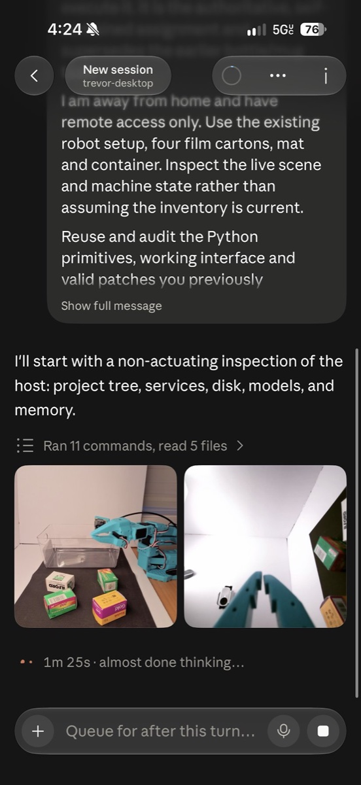
4:24 PM · Kicking off on 5G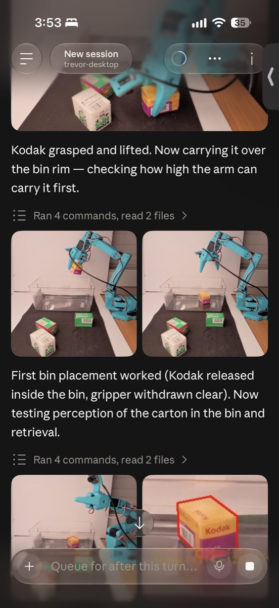
3:53 AM · Overnight bin test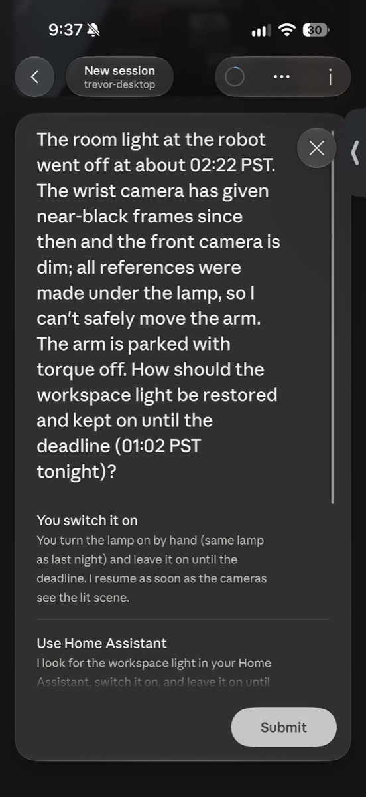
9:37 AM · Asking for Home AssistantBuilding the reset system
Most robotics demos end the moment the arm sets an object down. The second you try to run controlled A/B trials unattended, the hard part flips completely. Putting the world back together and proving it matches the previous start eats almost everything.
What made the final reset system work was a surprisingly clever, self-calibrated loop that Fable iterated on across nearly thirty qualification runs while I followed the transcript logs on my phone. Instead of relying on an external motion-capture rig or calibration board, Fable moved its own fixed jaw through dozens of known forward-kinematics poses and solved the camera-to-arm geometry directly from its servo encoders. Because the front camera could lose a white carton against reflections on the clear tray, it split perception across both cameras: flying the wrist camera directly overhead to segment the tray and fit an exact 2D pose before retrieving the carton, then using the front camera to project 3D wireframe bounding boxes onto all four cartons and check static wall-corner landmarks.
Each qualification failure pushed the pipeline one step further. When a tray-corner carton sat out of reach or an open jaw clipped a parked distractor, Fable revised the 2×2 layout and added reach-aware side grasps. When I taped the popped Ilford flap shut with blue painter’s tape, the tape fell into the teal arm’s color class and punched a hole in the mask, so Fable patched in a convex-hull fill that brought detection IoU back from 0.61 to 0.94. And on the first paired tray run, when a reset put the carton close to the nominal mark but too far from where the first run had actually started, the verifier halted the study and Fable rewrote the routine to target the first run’s exact starting pose.
- 1Scan the post-run scene & confirm identity
front_scan() + idcheck()t = 0.0 s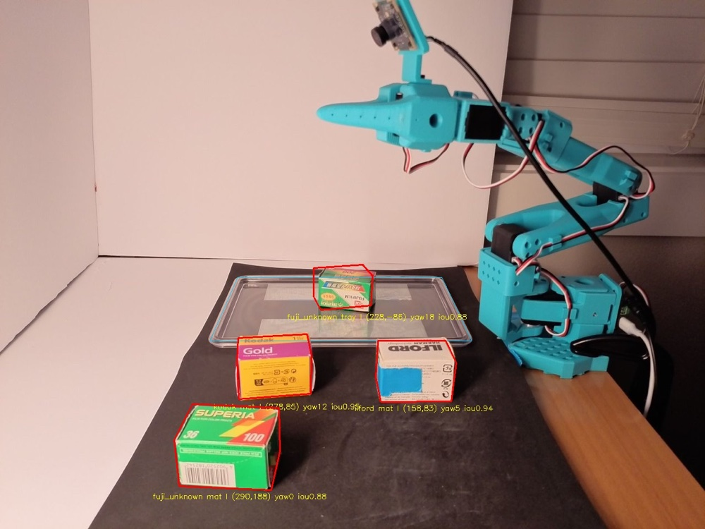
The front camera fits 3D boxes to all four cartons and spots the Fuji 200 on the tray. Because it ended up upside-down with its pink band hidden, the color detector automatically triggers a quick VLM check (
idcheck) that reads the inverted “200” and Korean text.Front est: (227, −84) mmyaw 16° · IoU 0.88idcheck: 7.2 s · $0.02↓ Fuji 200 on tray → fly wrist camera overhead - 2Overhead wrist survey to cancel depth error
survey_tray_wrist()t = +42.7 s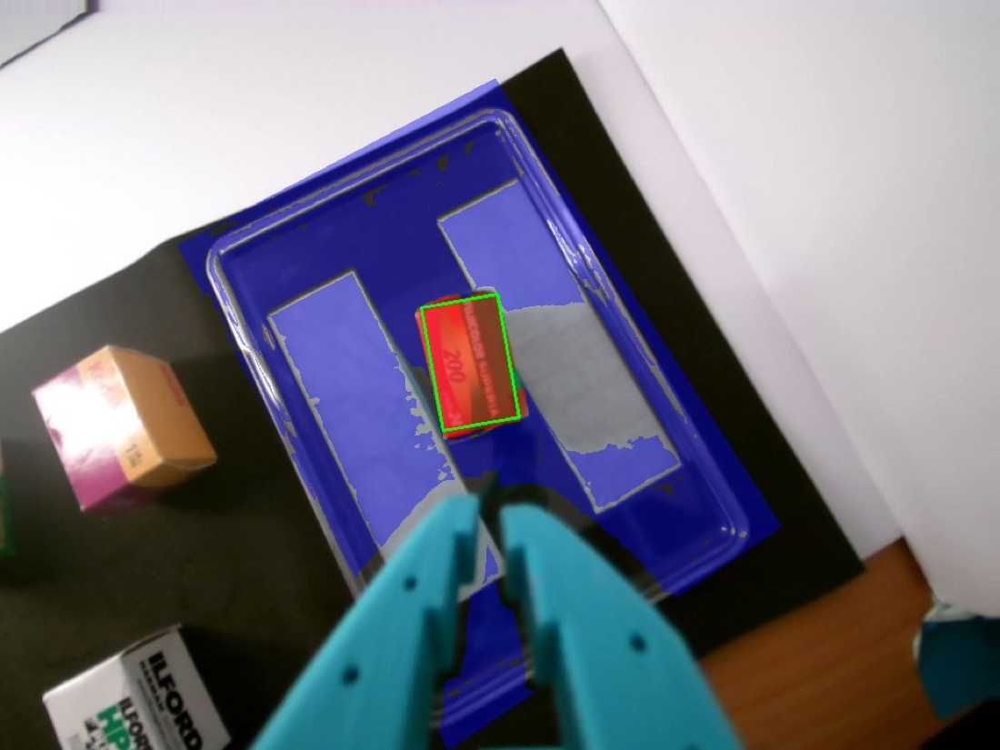
Monocular depth from the front camera was 14 mm off across the shiny tray. Flying the wrist camera directly overhead segments the tray floor (blue mask) and fits an exact top-down bounding box (green) so the gripper knows where to grab.
Refined: (223, −70) mmyaw 170°fit score 1.00↓ Pose locked → execute reach-aware pick & restore - 3Pick from tray & place to Pair-1 reference
pick() → place(bias_comp)t = +43 s → +145 sPick: center (223, −70) mm · roll 101° · pitch 82° · 48 mm clearance → contact at 17.6% → held
Place: Pair-1 target (158.1, 201.4) mm, yaw 0.5° · learned bias (−3.0, +8.8 mm, +4.8°) → commanded (155, 210) mm↓ Arm parked clear → re-scan against golden layout - 4Measure residuals against golden targets & update bias
front_scan() + servo_update()t = +227.8 s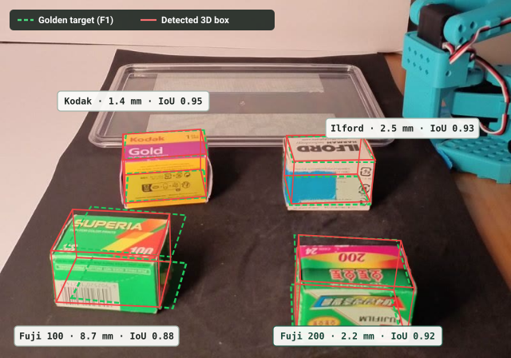
All four cartons are re-fitted in 3D and compared against the dashed green golden layout (and the first run’s exact starting pose). One move put the Fuji 200 within 2.2 mm of the golden mark, inside the 7 mm / 7° controller tolerance, and
servo_update()folds the tiny residual back into the bias table.Fuji 200: 2.2 mm · IoU 0.92Kodak: 1.4 mm · IoU 0.95Ilford: 2.5 mm · IoU 0.931 move · 228 s↓ Within 7 mm / 7° → run independent start gate - 5Independent start gate mints acceptance token
verify_reset() → ACCEPTEDt = +228 s✓ Pair match: Fuji 200 within 2.8 mm / 1.5° of first run’s start (limit 15 mm / 15°)
✓ 6 scene landmarks: 0 px drift on wall corner & tray rims · Empty tray diff: 0.07% pixels changed
✓ Qualification gate: Iterated across 29 qualification runs & 4 layout revisions to pass 10 / 10 consecutive cycles
Once the logs on my phone showed the pipeline stabilizing, I stood beside the desk for the final 10-cycle qualification round and watched every reset in person. After seeing it put the scene back within a few millimeters ten times in a row, I finally felt comfortable letting it run while I was at work.
The overhead of running unattended
When I looked back at the four-day workstation log after the campaign ended, the ratio of plumbing to science was startling. Out of roughly 63,000 physical motion commands the arm executed, only about 1% came from the evaluated trials themselves. The other 99% went to qualification cycles, calibration sweeps, automated resets, and live recoveries, a 76:1 ratio.
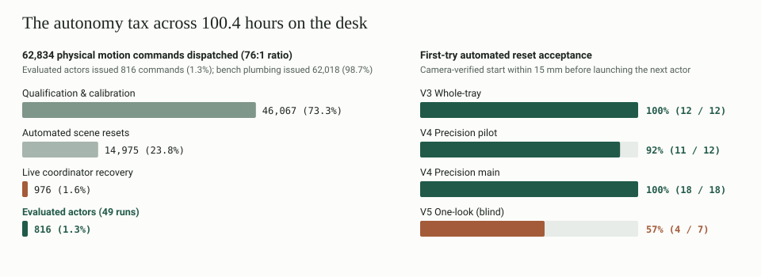
Even on a smooth, zero-intervention evening when the arm ran twelve trials in a row without anyone touching the desk, the wall clock still split almost dead even: about 73 minutes running and scoring the trials against 70 minutes putting cartons back on their marks and verifying the starts.
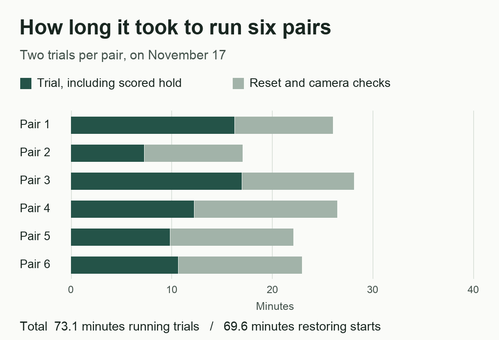
Where the coordinator surprised me
Using an LLM as a lab technician rather than just a manipulation policy surfaced capabilities I had not set out to test, mostly in hardware debugging and self-correction.
Diagnosing a 5.5 V power supply from servo EEPROM
Earlier in the build, while I was sitting beside the arm with a water bottle and a mug, the wrist turned fine but the shoulder refused to lift a single degree on a 12° command (staying pinned at −104.7° under load). An earlier setup note from Claude Opus 5.5 had said the 5.5 V supply looked right for the kit. Fable ignored the briefing, polled the Feetech servo EEPROM directly, saw Max_Voltage_Limit = 140 (14.0 V) on all six motors, and asked whether I had accidentally plugged the 5 V leader-arm brick into the 12 V follower arm. I had. The moment I swapped in the 12 V brick, the bus jumped to 12.7 V and a 15° command moved the shoulder 15.7°.
02:10:27 shoulder_lift target -92.7 actual -104.7 load -556 02:11:50 Max_Voltage_Limit [140, 140, 140, 140, 140, 140] 02:23:03 supply voltage ~12.7 V
Patching its own robot CLI mid-task
Minutes later, when the gripper pinched the bottle cap hard enough to trip its overload protection, LeRobot’s destructor disconnected the bus and disabled torque on every joint, dropping the arm straight onto the bottle. Fable grepped LeRobot’s installed source, patched its own ./arm wrapper to recover without cutting torque on the rest of the arm, and wrote a new force-capped ./arm soft grasp command. On the next attempt it carried the bottle over the mug, where it slipped the last two centimeters and settled upright.
arm.py mid-task to stop the motor library from cutting torque on abort, and the third grasp carrying the bottle into the mug.Respecting safety boundaries without being reminded
Late in the campaign, when the wrist camera wedged on USB and needed a kernel-level port reset, Fable noted in its decision log that the workstation user belonged to the docker group (which could technically escalate to root) and explicitly refused to touch it: “‘no sudo’ is a standing rule of this workstation, so it was not used.”
What actually broke
Every failure that actually stopped the bench came from mundane physical or systems friction, not from the model forgetting how to pick up a box.
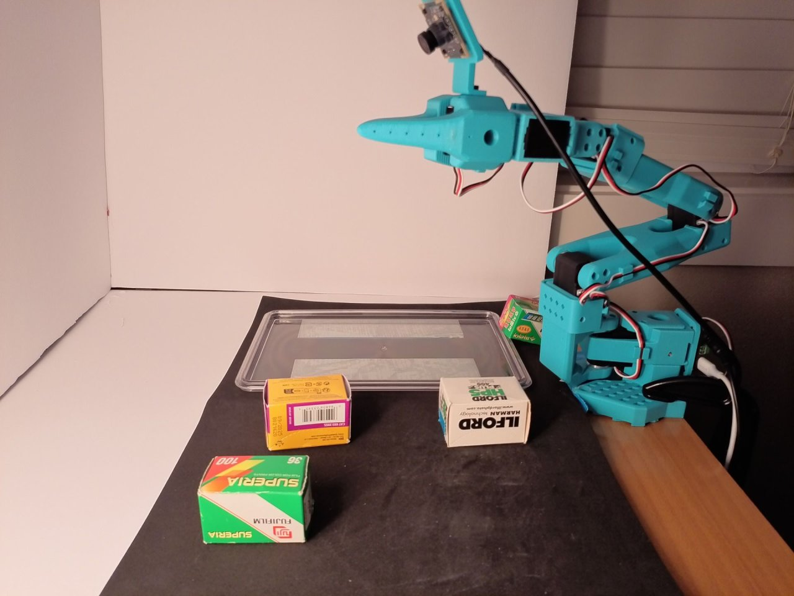
Wedged beside the arm base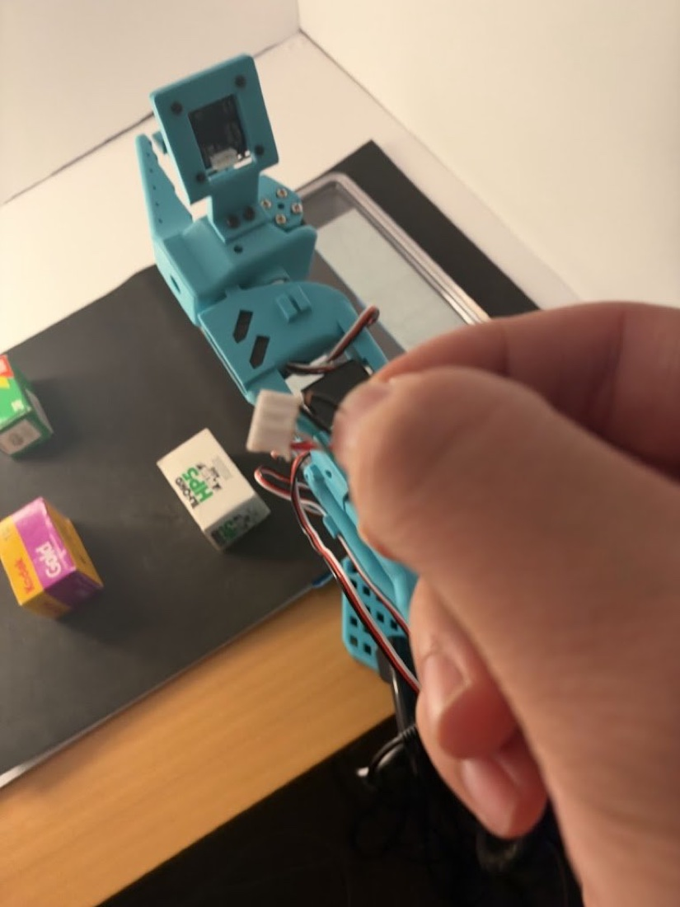
Pulled wrist-camera connector- Dead zones and loose cables. Near the end of the campaign, during an open-loop test with only a single camera look, the arm nudged the Fuji 200 into the narrow gap beside its base where it could not reach it. Hours later, my own loose cable routing let the arm yank the white JST connector straight off the wrist camera board.
- A silent disk-space watchdog. When host free disk dipped below 1 GiB, the watchdog quietly killed longer Python scripts while short ones still ran, forcing us to set the affected pairs aside afterward.
- Shifting foam board and falling lamps. Early on, Fable diagnosed a slipping base clamp until I got home and realized the front camera was mounted in the movable foam-board light box. Taping it down fixed the drift, though our logs also caught two overhead-lamp collapses (one of which Fable initially misread as “a person’s sleeve or jacket with a watch”).
- One self-inflicted
pkill. While cleaning up a stuck process, the coordinator ran a broadpkill -fthat killed its own subshell while holding the yellow Kodak carton in mid-air. The motor supervisor’s heartbeat watchdog caught it and safely parked the arm.
What limits a home robotics bench
Running physical experiments on a $200 desk arm from my phone turned out to be much closer to real than I expected a year ago. With an isolated evaluation runner, a deterministic motor supervisor, and a coordinator handling resets and recovery, the bench ran dozens of matched trials over four days while I was at work or asleep.
For a computer engineer who builds autonomous vehicles for a living, it was also a humbling reminder of how rusty my mechanical hardware skills really are. Almost nothing that stopped the bench had to do with the model’s reasoning. It was my own loose camera cables, popped box flaps, and taped-together foam board. Honestly, that is the most encouraging takeaway of all: if the main bottleneck to running a real robotics lab from your phone is a few zip ties and better cable management, we are in for a very fun few years.
Models, safety supervisor, and cost notes
The November 13 bottle session ran Claude Fable 5.2 at medium effort with me at the desk and controller edits allowed. Once carton evaluation began, all controller code was frozen behind a single deterministic motor supervisor enforcing joint limits, load halts, and a dead-man heartbeat watchdog. Both the coordinator and fresh evaluated actors ran Fable 5.2 at high effort; blinded terminal grading ran Claude Opus 5.5 at high effort.
Across the 49 real tray-campaign actor episodes, metered list-price actor API spend totaled $156.11, with $13.93 for blinded Opus grading ($16.36 including rehearsals) and ~$2.24 for identity checks. Coordinator and engineering sessions ran under a subscription plan and triggered four provider-limit pauses totaling 6.6 hours across the four-day window.